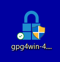
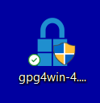

Scarica Gpg4win (1/4)
Il programma è disponibile nel sito del software Gpg4win.

Il programma è disponibile gratuitamente. Se viene chiesta una donazione, selezionare il tasto $0.
Il programma è disponibile nel sito del software Gpg4win.

Il programma è disponibile gratuitamente. Se viene chiesta una donazione, selezionare il tasto $0.